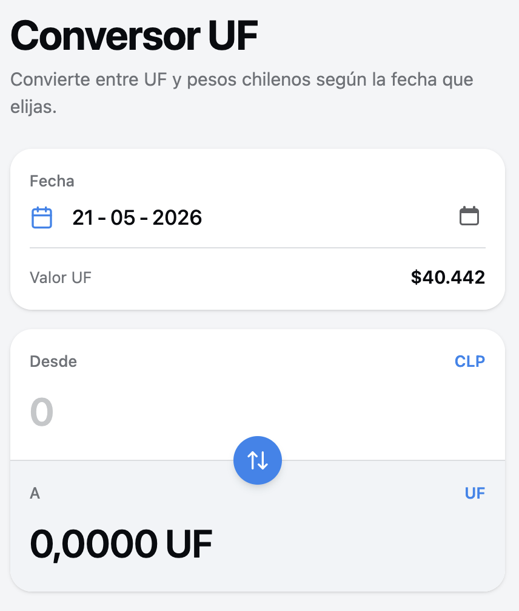

Conversor de Divisas
En este capítulo se realizará un conversor de divisas simple, con el objetivo de demostrar el uso de base de datos SQLite con Mob.
Archivo uf.db
Se creará un conversor de UF a CLP, para esto se dispone de una base de datos (uf.db) con los valores por día de la UF desde el día 1977-08-01 hasta el día 2026-06-09.
|
La Unidad de Fomento (UF) es un índice de reajustabilidad, calculado y autorizado por el Banco Central de Chile, para las operaciones de crédito de dinero en moneda nacional que efectúen las empresas bancarias y las cooperativas de ahorro y crédito. Para fines del cálculo de este índice, el valor de la UF se reajusta a partir del día diez de cada mes y hasta el día nueve del mes siguiente, en forma diaria, de acuerdo a la variación experimentada por el Índice de Precios al Consumidor (IPC) que determina el Instituto Nacional de Estadísticas (INE) o el organismo que lo reemplace en el mes calendario inmediatamente anterior al período para el cual la UF se calcula y publica. (Banco Central de Chile, 2026) |
La tabla simplemente tiene la siguiente estructura
CREATE TABLE uf_values (
period NVARCHAR(50) UNIQUE,
uf NUMERIC
);Tendrá los valores dados por el Banco Central de Chile (https://si3.bcentral.cl/Indicadoressiete/secure/IndicadoresDiarios.aspx).
period,uf
1977-08-01,389.10
1977-08-02,389.51
1977-08-03,389.91
1977-08-04,390.32
1977-08-05,390.73
1977-08-06,391.14
1977-08-07,391.55
1977-08-08,391.96
1977-08-09,392.37
1977-08-10,392.85
1977-08-11,393.34
1977-08-12,393.83
1977-08-13,394.31
1977-08-14,394.80
1977-08-15,395.29
1977-08-16,395.77Una consulta de ejemplo para obtener el valor de 2 UF (UF a CLP) para el 18 de Octubre de 1989 sería la siguiente:
SELECT period, uf, (uf * 2) AS value FROM uf_values WHERE period = '1989-10-18' LIMIT 1Una consulta de ejemplo para obtener el valor de 10280.14 CLP (CLP a UF) para el 18 de Octubre de 1989 sería la siguiente:
SELECT period, uf, (10280.14 / uf) AS value FROM uf_values WHERE period = '1989-10-18' LIMIT 1Paso 1: Crear la aplicación
El primer paso es crear nuestro proyecto utilizando mob.new y mob.install.
$ mix mob.new conversor_uf
$ cd conversor_uf
$ mix mob.installPaso 2: Pantalla Principal
Ahora se debe crear la pantalla donde estará el conversor. Para esto se ha creado un prototipo en imagen que muestra una interfaz propuesta para esta aplicación.

Referencias
Banco Central de Chile. (2026). Unidad de Fomento (UF) [PDF]. https://si3.bcentral.cl/estadisticas/Principal1/Metodologias/EMF/UF.pdf